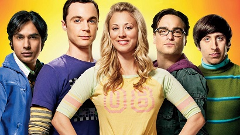

The Big Bang Theaory
Background
The Big Bang Theory is an American television sitcom created by Chuck Lorre and Bill Prady, both of whom serve as executive producers on the series, along with Steven Molaro.
All three also serve as head writers.
The show premiered on CBS on September 24, 2007[3]. The series' tenth season premiered on September 19, 2016 [4].
In March 2017, the series was renewed for two additional seasons, bringing its total to twelve, and running through the 2018–19 television season.
The eleventh season is set to premiere on September 25, 2017.[5]Fun Facts
- Several of the actors in The Big Bang Theory previously worked together on Roseanne including Johnny Galecki, Sara Gilbert, Laurie Metcalf (who plays Sheldon’s mother, Mary Cooper) and Meagen Fay (who plays Bernadette’s mother).
- Additionally, Lorre was a writer on the series for several seasons
- For the first three seasons, Galecki, Parsons, and Cuoco, the three main stars of the show, received at most $60,000 per episode. The salary for the three went up to $200,000 per episode for the fourth season.
- Their per-episode pay went up an additional $50,000 in each of the following three seasons, culminating in $350,000 per episode in the seventh season.
- By season seven, the three were also receiving 0.25 point of the series’ backend money.
- The Canadian alternative rock band Barenaked Ladies wrote and recorded the show’s theme song, which describes the history and formation of the universe and the Earth.
- Ed Robertson, co-lead singer and lead guitarist in the band, was asked by Lorre and Prady to write a theme song for the show after the producers attended one of the band’s concerts in Los Angeles
- As the theme of the show revolves around science, many distinguished and high profile scientists have appeared as guest stars on the show.
- Most of the time, Leonard has no lenses in his glasses
Quotes
Quote 1- Raj:
- I don't like bugs, okay. They freak me out.
- Sheldon:
- Interesting. You're afraid of insects and women. Ladybugs must render you catatonic.
- Sheldon:
- Amy's mad at me, and I'm not clear why.
- Penny:
- Okay, were you talking before she got upset?
- Sheldon:
- Yes.
- Penny:
- That's probably it.
- Howard:
- You know, I'm really glad you decided to learn Mandarin.
- Sheldon:
- Why?
- Howard:
- Once you're fluent, you'll have a billion more people to annoy instead of me.
- Bernadette:
- Aww, Raj did the dishes.
- Howard:
- How do you know I didn't do them?
- Bernadette:
- Because once when all the knives were dirty, you cut a bagel with your keys.